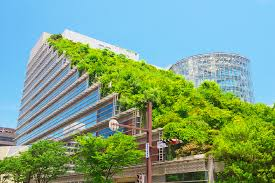
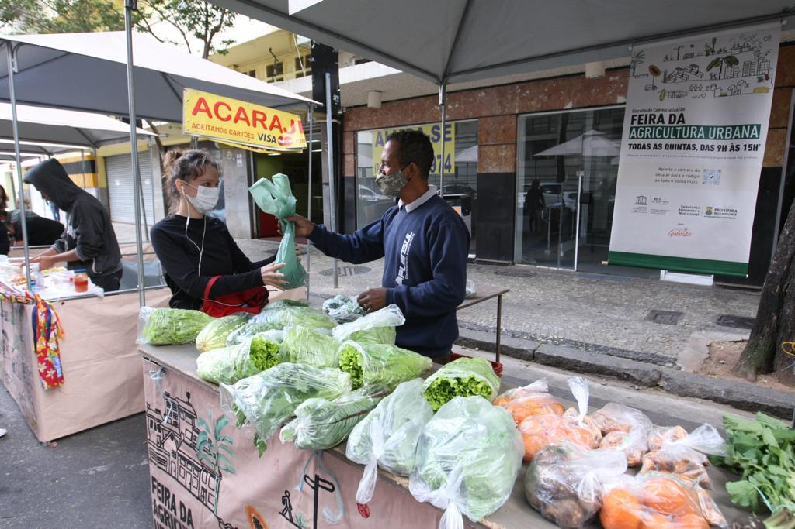
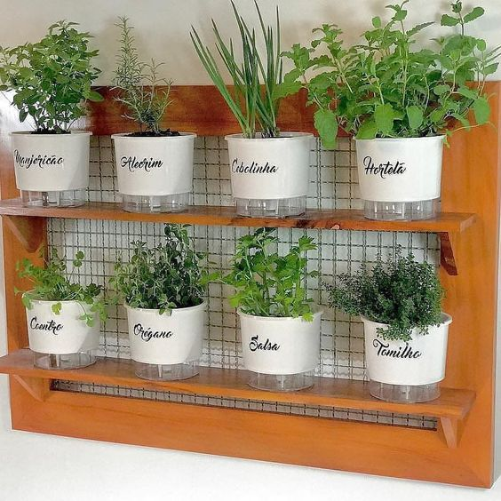

Benefícios da Agricultura Urbana
A prática da agricultura urbana traz diversos benefícios para as comunidades locais:
- Acesso a alimentos frescos: A produção local de alimentos proporciona acesso a produtos frescos e saudáveis, reduzindo a dependência de alimentos que precisam ser transportados de longas distâncias.
- Sustentabilidade: Cultivar alimentos localmente ajuda a diminuir a pegada de carbono relacionada ao transporte e armazenamento de alimentos.
- Fortalecimento da comunidade: A agricultura urbana estimula a interação entre os moradores, fortalecendo os laços comunitários.
- Educação e conscientização: O cultivo de alimentos nas cidades é uma poderosa ferramenta educacional.
- Resiliência: Em momentos de crises, a agricultura urbana desempenha um papel fundamental na garantia da segurança alimentar local.
Práticas de Agricultura Urbana
Hortas Comunitárias
Pequenos lotes de terra em áreas urbanas onde residentes locais podem plantar vegetais, ervas e flores.
Telhados Verdes
Jardins ou pequenas fazendas instalados nos telhados de edifícios urbanos.
Mercados de Agricultores Urbanos
Locais onde agricultores vendem diretamente aos consumidores em grandes cidades.
Cultivo em Pequenos Espaços
Uso criativo de áreas pequenas como varandas, janelas e quintais para cultivo de alimentos.
